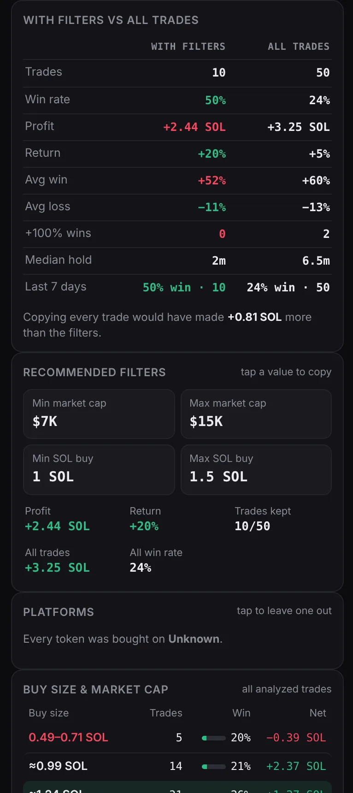
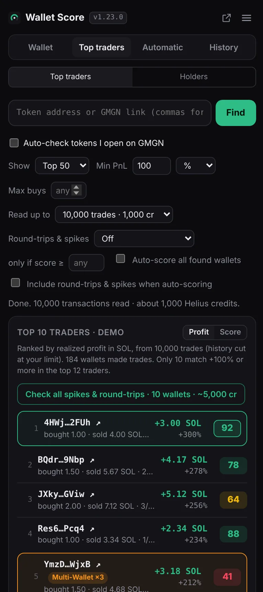
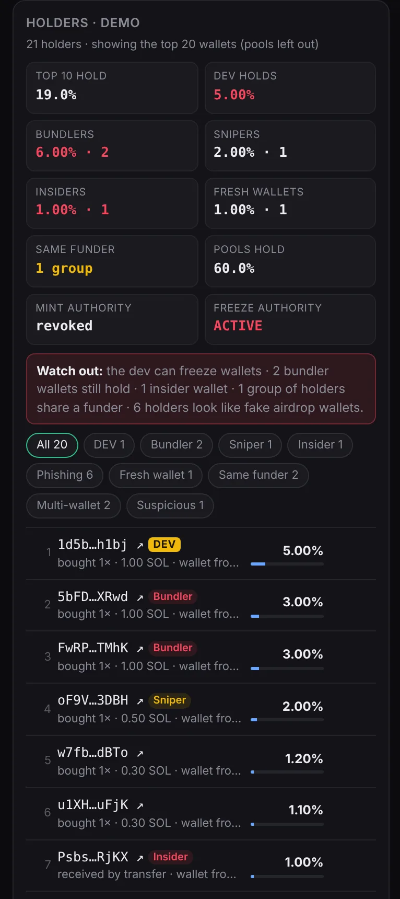

Know which wallets are worth copying before your bot does.
Paste any Solana wallet and get a 0–100 copy score from its real trades, the market-cap and buy-size filters that actually work for it, and every red flag a copier pays for.
Free. Runs in your browser with your own free Helius API key. No account, no tracking.
- 73win rate inside the filters (win = +20% or more)
- +15win rate 73% in filters (over 50%)
- +10filters: +6.2 SOL vs +1.8 SOL without (3.4×)
- +3~130 trades in 7 days (64 buys)
- −10last 7 days: 40% win over 10 trades
- −512% of tokens held under 10s
Example wallet for illustration
From wallet address to bot filters in under a minute
Add your Helius key
Sign up free at helius.dev and paste the key into the extension's settings. It stays in your browser.
Paste a wallet
Or a whole list. The extension pulls up to 50 of its newest tokens from the last 31 days and works out every trade.
Copy the filters
Get the score, why it scored that way, and the min/max market cap and buy size to paste into your copy bot.
Everything you check by hand on GMGN, done for you
A score you can read line by line
The score starts at the wallet's win rate inside its best filters, then every bonus and penalty is listed, so you always know why.
- With filters vs all trades side by side: trades, win rate, profit, median hold
- Red flags for quick flips, losing weeks and very busy wallets
- Paste a list of wallets and score them all, sorted by score

The range where this wallet actually wins
It tests every market-cap and buy-size range, keeps the one that makes the most SOL while winning often, and trims weak edges.
- Tap any value to copy it straight into your bot
- Buy size and market-cap tables show where the wins and losses come from
- Market cap cut-off checker: how it does below $25K, $30K, any value

Find the wallets behind a winning token
Paste a token, or several separated by commas, and see who made the most on it. Score them all with one click.
- Min PnL in % or SOL, and a max buys limit
- Multi-wallet flags for wallets that trade in the same block
- "3 of 4 tokens" tags show repeat winners across tokens

Check who holds a token before you buy
A token's top holders, each labelled, with a short list of what to watch out for.
- Dev, bundlers, snipers, insiders and fresh wallets
- Same-funder groups, phishing and fake airdrop wallets
- Mint and freeze authority at a glance

Your results, right on wallet pages
Open a wallet you analyzed on gmgn.ai and the score sits next to its address, with labels on every token.
- DEV, Spike, Round-trip, QuickSell labels per token
- In filter / Out of filter: what your bot would have taken
- Read-only, and you can turn it off in settings

Built around what a copier actually gets
A wallet's own profit is not your profit. The score is built from the trades a copy bot could realistically follow.
Skip wallets that only look good
Perfect records on 3 trades, tiny 2% wins and one lucky hit don't score high. Wins only count at +20% or more.
See the trades you can't follow
Sells within seconds at low market caps are counted as losses, because a bot buying a block later can't get those fills.
Know what you'll really pay
Optional checks measure how far price jumps right after the wallet buys, and which trades were up big before closing red.
Filters, not just a score
Every wallet comes with the market-cap and buy-size range to set in your bot, and how much better it does inside it.
Judged on what it does now
Only the last 31 days count, so a wallet back from a long break is judged on its new trades, not last year's.
Your data stays yours
No sign-up and no server. Your key, wallets and results stay in your browser; lookups go straight to the data services.
Before you install
Is it free?
Yes. The extension is free. It uses your own Helius API key, and Helius's free plan is enough for regular use.
Can it trade or touch my wallet?
No. It only reads public blockchain data. It never connects to a wallet, never signs anything and cannot move funds.
Is the score financial advice?
No. It's an estimate from a wallet's past trades. Past results don't guarantee future ones, so use it as one input to your own decisions.
Score your first wallet today
Install the extension, add a free Helius key and paste a wallet. It takes about a minute.